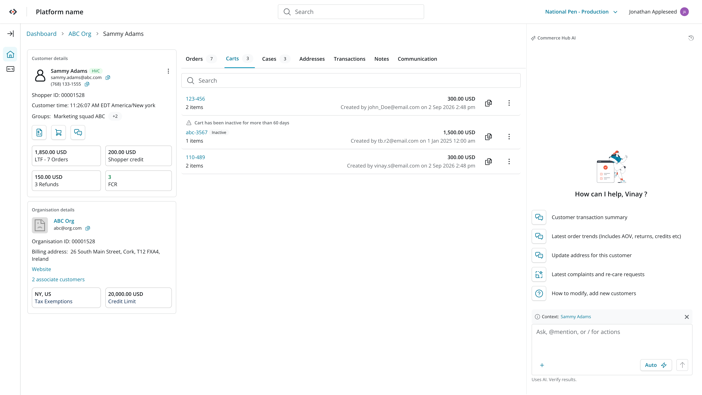
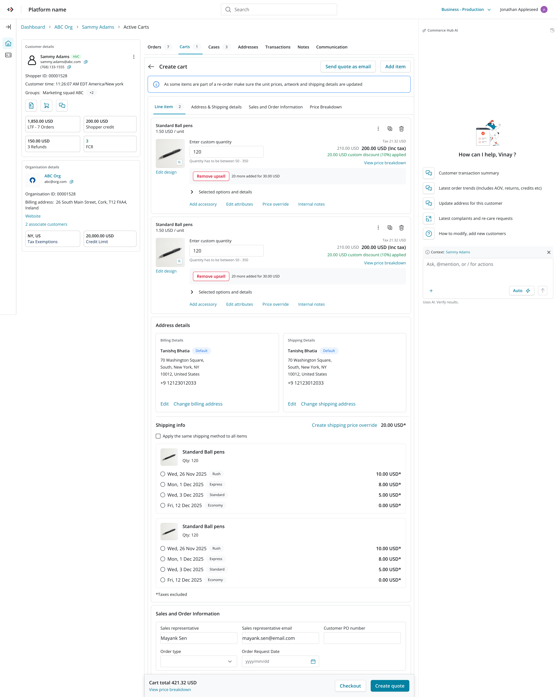
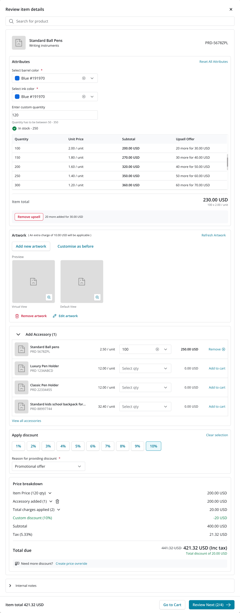

Order Placement: From Cart to Sales Workflow
This started as a request to fix the cart. It turned into rebuilding the whole path from finding a customer to closing an order.
Before / after — Order Placement flow (image placeholder, drop screenshots here)
Impact
We rebuilt Order Placement from the ground up — not just the cart, but the whole thing a sales agent has to do to get from a customer to a completed order. Once customer lookup, reorders, product customization, and payment lived in one flow instead of five, the effort to place an order dropped hard, and so did AHT.
Average Handle Time
Pulling the fragmented cart workflow into one flow made this drop fast.
Of all orders were reorders
Which is exactly why we designed around reordering instead of treating it as an edge case.
The challenge
Order Placement had quietly outgrown what a cart usually is. For a sales agent, a cart doubled as a quote — something meant to eventually become an order.
That meant the experience had to hold up across the whole journey: identifying the customer, building a customized purchase, and getting through payment.
Instead, agents were stuck jumping across fragmented workflows for what should have been a fairly simple sale.
Reframing the experience
Four shifts carried this redesign, from finding the customer to closing out payment:
1. Start with the customer
We simplified customer lookup first, so agents could find and select the right customer fast, before they'd even started the order.
That gave the whole workflow a clear starting point, and set up the customer context that everything downstream could build on.
2. Design around reorders
The data was hard to ignore: more than half of all orders were reorders. So instead of treating every order like a first-time purchase, we designed for the behavior that was actually happening most.
Past orders now showed up front and center, so an agent could grab an existing product and use it as the starting point instead of building from scratch.
That alone took a lot of the effort out of repeat orders, and AHT dropped along with it.
3. Bring customization into Add to Cart
Most of these products needed real customization, so "add to cart" as a single dumb action wasn't going to cut it. We built it out into a proper workflow that brought the key sales actions together:
Add to Cart stopped being a checkbox step and became a real part of how the sale actually happened.


We treated customization as a lever for both usability and order value.
The pricing grid was surfaced upfront, so agents could spot upsell opportunities on higher quantities at a glance.
Uploaded artwork appeared upfront, and Customize Before let agents reuse it — most customers reordered with the same artwork.
Discounts up to 10% were self-serve. Anything higher needed a pricing override, protecting margin without blocking legitimate exceptions.
The trickiest part: pricing-override APIs didn't exist yet, so we designed the interaction model ahead of the backend.

4. Build for the future of payments
Payment was the last big piece, and the tricky part was that the underlying APIs weren't ready yet. We had to design ahead of the infrastructure.
So rather than build for one payment method and hope the rest would fit later, we built a structure flexible enough to take on more payment methods as those APIs actually shipped.
That let us lock in the interaction model early without boxing ourselves out of whatever payments needed to support down the line.
Designing beyond the cart
The real shift here was to stop thinking of Order Placement as a bag of cart features and start treating it as one sales workflow, start to finish.
Customer context, reorder behavior, customization, discounts, artwork management and payment all live in one coherent experience now, which took a lot of the cognitive and operational weight off sales agents and gave us a foundation that can actually grow with the product.
One workflow. One conversion path. Every sale, start to finish.